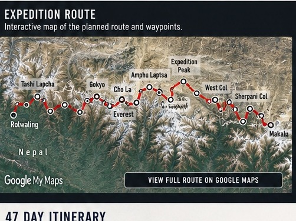
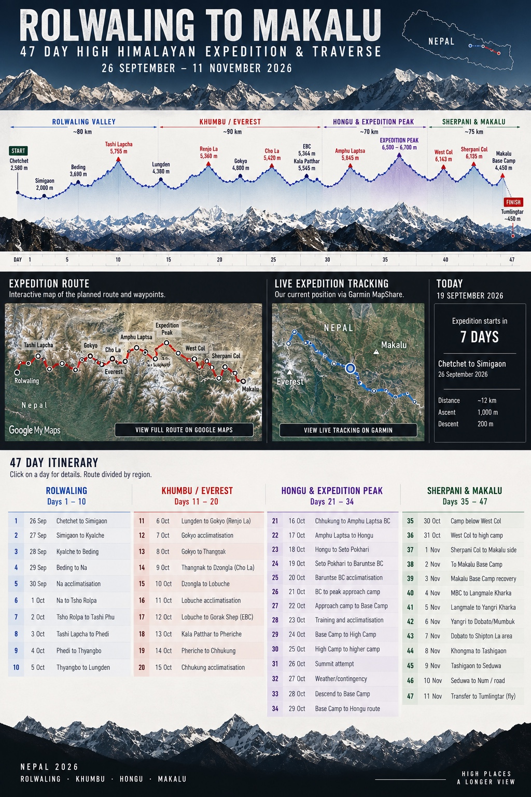
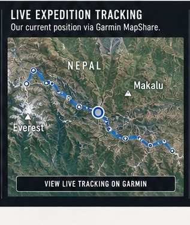

Planned route
Google My Maps
Explore the planned traverse, route line and waypoints.
Chetchet through Rolwaling and the Khumbu, across the Hongu, a high-altitude climbing week, then West Col and Sherpani Col to Makalu Base Camp and Tumlingtar.
RolwalingKhumbuHonguMakalu
The original mountain/elevation artwork is retained here rather than replacing it with a simplified chart. Select the marked high points or the cards below for route details.

The two panels use expedition imagery rather than empty placeholders. The planned route opens in Google My Maps; live position opens separately in Garmin MapShare.

Explore the planned traverse, route line and waypoints.

Satellite tracking and the actual progress of the expedition.
Filter the journey by region. The current expedition day is highlighted automatically while the traverse is underway.